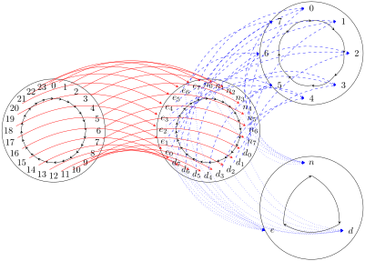
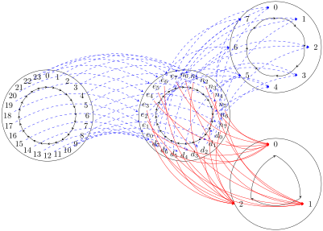

Is there a map in \(\mathcal{S}^\circlearrowright\) from the ‘day clock’...
Solution.
I think reasonable place to start in this situation is with the natural product that would assign to treating each hour a \(\langle \text{shift},\text{work hour} \rangle\) pair. The natural way to show this as a product might be the following diagram:

I’m pretty sure that’s the only map in \(\mathcal{S}\) satisfying the definition of product, but perhaps the real question here is if it preserves structure and I don’t think it does. The problem is that “one press in the day clock” always corresponds with “one press in the shift clock” but it does not always correspond with “one press in the work shift”.
Well, the question of “should we increment the shift?” is essentially a binary value. Maybe we can use that property to separate the points our product into a sum? The hours \(\{7,15,23\}\) would form one set and rest would form the other. There’s also a dual notion that would split \(\{0,8,16\}\) off from the rest of the set also. It’s almost like \(\{7,15,23\}\) behave as terminal objects, while \(\{0,8,16\}\) behave as initial objects with respect to this shift change.
Maybe I should be thinking about this mystery \(X^{\circlearrowright \alpha}\) a sum of “loops” and “tails”. Our points \(\{7,15,23\}\) (or \(\{n_7,d_7,e_7\}\) in the alternate notation) would be mapped directly to \(\{n,d,e\}\) respectively, while the digits in between those values would be mapped to the respective distance along the tails. This way we’ll have some way of knowing how many presses before a shift change needs to happen.
After drawing out some sample products as per Exercise 2, it’s clear that the product of a cycle with a tail is a cycle with attached tails. This means that in order to produce the 24-cycle \(C_{24}^\circlearrowright\text{,}\) our mystery object \(X^{\circlearrowright \alpha}\) would need to a cycle itself and make the only possible choice the 3-cycle \(C_3^\circlearrowright\text{.}\)

My reasoning is this. There are 24 different maps from \(\mathbb{N}^{\circlearrowright \sigma} \rightarrow C_24\) but precisely one of them maps \(\{0\} \rightarrow \{0\}\text{.}\) Namely, the modulo operation \(f(n) = mod_{24}(n)\text{.}\) This has the nice property enforcing \(\{0\} \rightarrow \{0\}\) means there’s a unique maps \(\mathbb{N}^{\circlearrowright \sigma} \xrightarrow{mod_8} C_8\) and \(\mathbb{N}^{\circlearrowright \sigma} \xrightarrow{mod_3} C_3\text{.}\) We can put these together to form a unique projection map \(\mathbb{N}^{\circlearrowright \sigma} \xrightarrow{p} C_8 \times C_3\) such that \(p(n) = \langle mod_8(n), mod_3(n) \rangle\text{.}\)
Essentially, I’m stepping out and using \(\mathbb{N}\) as a lens to look at the behavior of \(C_{24}\text{.}\) This works because of the following external diagram:
In order to convince myself that these maps preserve structure, I listed out all the points in a table.
| \(n\) | \(\langle p_1 n, p_2 n \rangle\) | \(\gamma n\) | \(p_1 \gamma n\) | \(\alpha p_1 n\) | \(p_2 \gamma n\) | \(\beta p_2 n\) | \(\langle \alpha p_1 n, \beta p_2 n \rangle\) |
| \(0\) | \(\langle 0, 0 \rangle\) | \(1\) | \(1\) | \(1\) | \(1\) | \(1\) | \(\langle 1, 1 \rangle\) |
| \(1\) | \(\langle 1, 1 \rangle\) | \(2\) | \(2\) | \(2\) | \(2\) | \(2\) | \(\langle 2, 2 \rangle\) |
| \(2\) | \(\langle 2, 2 \rangle\) | \(3\) | \(3\) | \(3\) | \(0\) | \(0\) | \(\langle 3, 0 \rangle\) |
| \(3\) | \(\langle 3, 0 \rangle\) | \(4\) | \(4\) | \(4\) | \(1\) | \(1\) | \(\langle 4, 1 \rangle\) |
| \(4\) | \(\langle 4, 1 \rangle\) | \(5\) | \(5\) | \(5\) | \(2\) | \(2\) | \(\langle 5, 2 \rangle\) |
| \(5\) | \(\langle 5, 2 \rangle\) | \(6\) | \(6\) | \(6\) | \(0\) | \(0\) | \(\langle 6, 0 \rangle\) |
| \(6\) | \(\langle 6, 0 \rangle\) | \(7\) | \(7\) | \(7\) | \(1\) | \(1\) | \(\langle 7, 1 \rangle\) |
| \(7\) | \(\langle 7, 1 \rangle\) | \(8\) | \(0\) | \(0\) | \(2\) | \(2\) | \(\langle 0, 2 \rangle\) |
| \(8\) | \(\langle 0, 2 \rangle\) | \(9\) | \(1\) | \(1\) | \(0\) | \(0\) | \(\langle 1, 0 \rangle\) |
| \(9\) | \(\langle 1, 0 \rangle\) | \(10\) | \(2\) | \(2\) | \(1\) | \(1\) | \(\langle 2, 1 \rangle\) |
| \(10\) | \(\langle 2, 1 \rangle\) | \(11\) | \(3\) | \(3\) | \(2\) | \(2\) | \(\langle 3, 2 \rangle\) |
| \(11\) | \(\langle 3, 2 \rangle\) | \(12\) | \(4\) | \(4\) | \(0\) | \(0\) | \(\langle 4, 0 \rangle\) |
| \(12\) | \(\langle 4, 0 \rangle\) | \(13\) | \(5\) | \(5\) | \(1\) | \(1\) | \(\langle 5, 1 \rangle\) |
| \(13\) | \(\langle 5, 1 \rangle\) | \(14\) | \(6\) | \(6\) | \(2\) | \(2\) | \(\langle 6, 2 \rangle\) |
| \(14\) | \(\langle 6, 2 \rangle\) | \(15\) | \(7\) | \(7\) | \(0\) | \(0\) | \(\langle 7, 0 \rangle\) |
| \(15\) | \(\langle 7, 0 \rangle\) | \(16\) | \(0\) | \(0\) | \(1\) | \(1\) | \(\langle 0, 1 \rangle\) |
| \(16\) | \(\langle 0, 1 \rangle\) | \(17\) | \(1\) | \(1\) | \(2\) | \(2\) | \(\langle 1, 2 \rangle\) |
| \(17\) | \(\langle 1, 2 \rangle\) | \(18\) | \(2\) | \(2\) | \(0\) | \(0\) | \(\langle 2, 0 \rangle\) |
| \(18\) | \(\langle 2, 0 \rangle\) | \(19\) | \(3\) | \(3\) | \(1\) | \(1\) | \(\langle 3, 1 \rangle\) |
| \(19\) | \(\langle 3, 1 \rangle\) | \(20\) | \(4\) | \(4\) | \(2\) | \(2\) | \(\langle 4, 2 \rangle\) |
| \(20\) | \(\langle 4, 2 \rangle\) | \(21\) | \(5\) | \(5\) | \(0\) | \(0\) | \(\langle 5, 0 \rangle\) |
| \(21\) | \(\langle 5, 0 \rangle\) | \(22\) | \(6\) | \(6\) | \(1\) | \(1\) | \(\langle 6, 1 \rangle\) |
| \(22\) | \(\langle 6, 1 \rangle\) | \(23\) | \(7\) | \(7\) | \(2\) | \(2\) | \(\langle 7, 2 \rangle\) |
| \(23\) | \(\langle 7, 2 \rangle\) | \(0\) | \(0\) | \(0\) | \(0\) | \(0\) | \(\langle 0, 0 \rangle\) |
We’ve got matching columns to show the structure preservation and the overall sequence iterates through every point in the product to form a cycle of 24. The first 3 rows and last row of that table seem particularly interesting. For \(n = 0\) and \(n = 1\text{,}\) we go from a “self-loop to self-loop” with \(\langle 0, 0 \rangle \rightarrow \langle 1, 1 \rangle\) and \(\langle 1, 1 \rangle \rightarrow \langle 2, 2 \rangle\text{.}\) However, \(n = 3\) maps a “self-loop to non-self-loop” \(\langle 2, 2 \rangle \rightarrow \langle 3, 0 \rangle\) while \(n = 23\) maps a “non-self-loop to self-loop” \(\langle 7, 2 \rangle \rightarrow \langle 0, 0 \rangle\text{.}\) It seems like this property might be useful in the future.